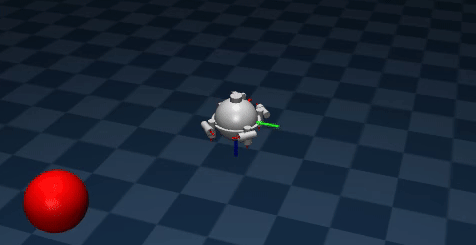

About
First year PhD student at Nanyang Technological University (NTU), Singapore.
Previous, I was a Project Researcher at Hanoi University of Science and Technology (HUST) and an R&D Robotics Engineer at VinRobotics, Vingroup.
News
[Aug 10, 2026]I joined Nanyang Technological University as a PhD student.
[Apr 08, 2026]I received NTU Research Scholarship for PhD studies.
[Sep 17, 2025]My work for HUST project is accepted for publication in Ocean Engineering.
[Sep 08, 2025]Thrilled to begin a new chapter at VinRobotics!
[Jul 07, 2025]Our ship-mounted Stewart platform paper is accepted for publication in Ocean Engineering.
[May 28, 2025]My project with VinIF, related to my master's course, was completed with high appropriateness.
[May 20, 2025]An AUV-related manuscript is submitted to Ocean Engineering.
[Apr 16, 2025]A paper on ship-mounted Stewart platform is submitted to Ocean Engineering.
[Mar 27, 2025]Our paper on ballbot was accepted for publication in IEEE Access.
[Dec 30, 2024]Our paper on Stewart Platforms was accepted for publication in Results in Engineering.
[Sep 12, 2024]I am delighted to announce that I have decided to receive the VinIF scholarship for my master's course.
[Jul 01, 2024]I started my Master of Science in Automation and Control at HUST.
[May 11, 2024]I graduated with a Bachelor of Science in Automation and Control from HUST.
[Mar 27, 2024]Our paper on ballbot was accepted for publication in IJRNC.
Education
Nanyang Technological University
School of Electrical and Electronic Engineering · Singapore
Ph.D. in Electrical and Electronic Engineering
Aug 2026 – Present
Hanoi University of Science and Technology
School of Electrical and Electronic Engineering · Hanoi, Vietnam
Master of Science in Control Engineering and Automation
Jul 2024 – Jul 2026
Thesis: Design control structures for parallel platforms in maritime applications
Bachelor of Science in Control Engineering and Automation
Oct 2020 – Apr 2024
Thesis: Balancing, Motion Planning, and Tracking Control for Ballbot Systems
Selected Publications
Ocean Eng.

Ocean Eng.

IET Cyber-Syst. Robot.

Unifying Hierarchical Sliding Mode Control and Control Barrier Function for Tilt Angle Constraint of a Ball-Balancing Robot
IET Cyber-Systems and Robotics, 2025
IEEE Access

RinE

Work Experience
R&D Robotics Engineer
VinRobotics, Vingroup · Hanoi, Vietnam
Sep 2025 – Jul 2026 · Full-time
Project Researcher
Motion Control & Applied Robotics Lab (MoCAR), HUST · Hanoi, Vietnam
Oct 2021 – Jul 2026 · Part-time
Advanced Control of a Ship-Mounted Stewart Platform for Marine Applications
Robot Navigation System Integrating Sensor Network and Wireless Communication

- Designed a comprehensive MuJoCo simulation environment for AUVs, modeling underwater dynamics, sensor feedback, and environmental disturbances.
- Developed trajectory generation and control for AUVs with optimal coverage sensor networks; published in Ocean Engineering (2025).
- Implemented and validated advanced control for robust navigation, obstacle avoidance, and trajectory tracking in challenging underwater scenarios.
- Integrated sensor network data and wireless communication protocols to evaluate system performance under realistic constraints.
Balancing, Motion Planning, and Tracking Control for Ballbot Systems

- Developed mathematical models and simulation environments for 3D ballbot systems: nonlinear dynamics, trajectory generation, and safety constraints.
- Designed observer-based hierarchical sliding mode control and NMPC with CBFs for obstacle avoidance and tilt angle limitation.
- Formulated and solved time-optimal trajectory planning problems using flatness theory and optimization techniques.
- Integrated extended state observers (ESO) to estimate system uncertainties and coupling effects.
- Published in IJRNC (2024) and IEEE Access (2025); received Best Thesis Defense Award at HUST.
Honors & Awards
- NTU Research Scholarship — PhD in EEE, Nanyang Technological University (NTU), Singapore
- Master, PhD Scholarship Programme — Vingroup Innovation Foundation (VINIF)
- Best Thesis Defense Award — Hanoi University of Science and Technology